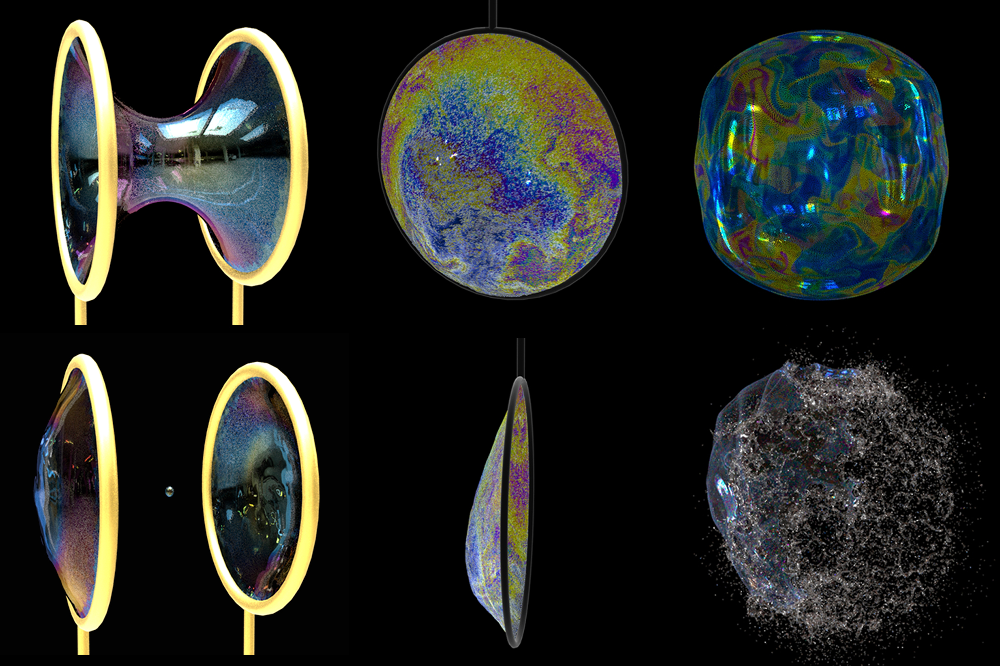

Thin-Film Smoothed Particle Hydrodynamics Fluid
Mengdi Wang1, Yitong Deng1, Xiangxin Kong1, Aditya H. Prasad1, Shiying Xiong1, and Bo Zhu1
1Dartmouth College

Abstract
We propose a particle-based method to simulate thin-film fluid that jointly facilitates aggressive surface deformation and vigorous tangential flows. We build our dynamics model from the surface tension driven Navier-Stokes equation with the dimensionality reduced using the asymptotic lubrication theory and customize a set of differential operators based on the weakly compressible Smoothed Particle Hydrodynamics (SPH) for evolving pointset surfaces. The key insight is that the compressible nature of SPH, which is unfavorable in its typical usage, is helpful in our application to co-evolve the thickness, calculate the surface tension, and enforce the fluid incompressibility on a thin film. In this way, we are able to two-way couple the surface deformation with the in-plane flows in a physically based manner. We can simulate complex vortical swirls, fingering effects due to Rayleigh-Taylor instability, capillary waves, Newton’s interference fringes, and the Marangoni effect on liberally deforming surfaces by presenting both realistic visual results and numerical validations. The particle-based nature of our system also enables it to conveniently handle topology changes and codimension transitions, allowing us to marry the thin-film simulation with a wide gamut of 3D phenomena, such as pinch-off of unstable catenoids, dripping under gravity, merging of droplets, as well as bubble rupture.
Video